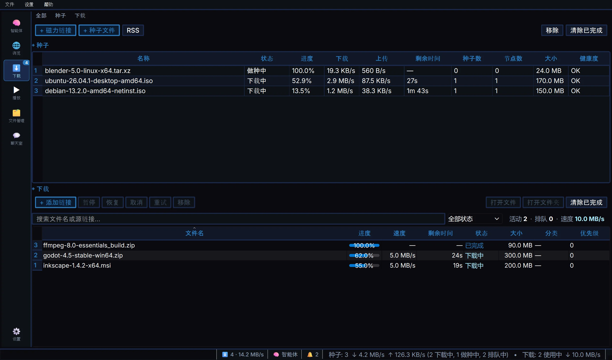
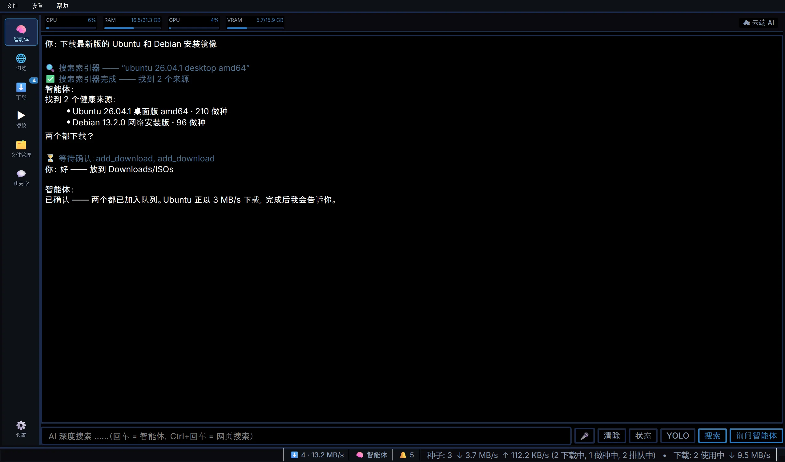

种子引擎
完整的 BitTorrent 引擎 —— 边下边播，一句聊天就能控制。
下载、媒体与文件，一个应用全包 —— 交给 AI 智能体，说句话就行。


完整的 BitTorrent 引擎 —— 边下边播，一句聊天就能控制。
内置 Chromium，支持隐私标签页和书签。
杜比视界、SVP 补帧、字幕、MilkDrop。
直播电视、电影和剧集，附完整节目单。
HTTP、HLS/DASH 和 YouTube —— 断点续传。
社区聊天室、RSS 自动下载、语音输入、双栏文件管理器。
智能体开箱即用 —— 内置共享 AI 密钥，随每次发布轮换。 想换用自己的密钥或本地模型：文件 → API 密钥。
63b8846f4303abcef63e5bd3904daab70507f06ba678cfaa5d4a207cd79ee6a7
5f584150f2110fb4773a759d8711174f02bedf814f518927e34fcf60e4426d77
安装、删除、下载 —— 敏感操作之前，智能体都会先问你。
文件、历史和密钥都留在本地。匿名使用统计一键关闭。
免费。设置可导出为文件，随时带走。